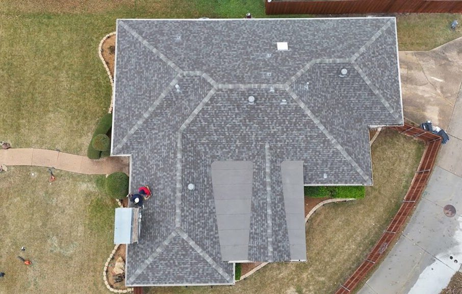

Targeted shingle replacement
Replacing damaged shingles and re-establishing the seal correctly rather than face-nailing them down.
Integrity that keeps you covered.
Roofing
Plenty of roofs get replaced that only needed a repair. We will tell you which one you have.

A good repair starts with finding the actual source rather than the nearest suspicious-looking shingle. Water gets in at a flashing detail or a failed boot, runs along a rafter, and shows up on a ceiling ten feet away. Patching where the stain is fixes nothing.
We repair what can be repaired. If your roof has plenty of life left and the problem is confined, a proper repair is the right answer and we will say so — even though a replacement would be the bigger invoice.
Active intrusion. Worth looking at before the drywall and insulation are involved.
Common after a wind event. The exposed area underneath is on borrowed time.
Rubber boots around plumbing vents are one of the most frequent leak sources on a Texas roof, and one of the cheapest to fix.
Where the roof meets a wall, chimney, or skylight is where roofs actually leak.
Causes
Boots, vents, and satellite mounts degrade in UV long before the shingles do.
Once a seal strip breaks, the shingle no longer bonds and the next storm takes it.
Valleys carry the most water on the roof and wear out first, especially where two large planes converge.
Sealant smeared over a flashing problem is a delay tactic, not a repair, and we find a lot of it.
Our inspection
In North Texas the same repair shows up over and over: a cracked pipe boot on a south-facing slope, wind-lifted shingles on the windward rake, and old chimney flashing that was sealed instead of replaced. None of those require a new roof — they require somebody willing to do a small job well.
Process
We find the source and document it.
Repair, replace, or monitor — with reasoning, not pressure.
Scoped to the actual repair, itemized, free.
Materials matched as closely as available, flashing replaced rather than resealed where appropriate.
Work reviewed, area cleaned, and photos of the completed repair.
We look at the repair again after the next real rain if you want us to, rather than assuming it held.
Options
Replacing damaged shingles and re-establishing the seal correctly rather than face-nailing them down.
New step, counter, or apron flashing at walls and chimneys. Sealant alone is a temporary measure at best.
New boots on plumbing vents, often the highest-value small repair on the roof.
Stripping back and rebuilding the valley with proper membrane and layering.
Rebuilding the flashing kit around a skylight, which is a far more common leak source than the unit itself.
Replacing sheathing that has already softened under a chronic leak, so the new work has something solid to sit on.
That is what the free inspection is for. A licensed inspector will tell you what your roof actually requires.
Free inspectionNo-obligation estimateFully insuredLicensed inspectors
In detail
Water entering a roof rarely falls straight down. It hits the underside of the decking, runs along the grain until it meets a rafter, travels the length of that rafter, soaks into insulation, and finally shows itself on a ceiling that can be a considerable distance from where it got in. On a low-slope roof, the horizontal run can be substantial.
This is why repairs aimed at the visible stain so often fail. Somebody replaces shingles directly above the mark, the homeowner pays, and the ceiling stains again after the next storm — because the actual entry point was a cracked boot two rafter bays over.
A proper diagnosis works backwards. Interior evidence first, then the attic to find where the water is landing and which direction it has travelled, then the roof surface at the point that path leads to. It takes longer than a glance, and it is the only way to be sure you are paying to fix the right thing.
A repair makes sense when the roof is fundamentally healthy and one component has failed. A single cracked pipe boot, a section of wind-lifted shingles on one slope, a chimney flashing detail that was sealed instead of built, a worn valley on a roof that is otherwise sound — all of those are repairs, and doing them well can buy real years.
Repair stops making sense when the failures are distributed. Hail bruising across several elevations, three leaks in three seasons in three different places, shingle mat exposed across whole slopes, or a visible dip in the roof plane all point the same direction. At that stage, repair money is being spent on something that is going to be replaced anyway.
There is also a middle case worth naming honestly: a roof that could be repaired but where matching material has become impossible. That is a legitimate reason to replace, and it is an appearance decision rather than a performance one. We will tell you which of the three you are in.
Small roofing jobs are unprofitable relative to the effort of getting a crew and equipment to the address, which is why plenty of companies will not return the call for one. It is also why so many homeowners are told a leak requires a full replacement when it does not — the replacement is worth the trip.
We take small repairs seriously, and we would rather do a good one now and be the company you call in eight years. The economics of that are perfectly obvious to us and they still work out.
What to expect
Most of what makes a job go badly is not craftsmanship — it is being left to guess what happens next. Here is the sequence.
Free inspectionNo-obligation estimateFully insured
Where the stain is, when it appeared, whether it grows after rain. That narrows the search before we arrive.
We start where the evidence is and work upward, because the entry point is usually not where you think it is.
The detail the water path leads to gets inspected, plus the surrounding field to check the repair will not be pointless.
A photograph of the actual entry point, not a description of it. Then a written estimate scoped to that repair.
The failed component is replaced and the detail rebuilt properly — flashing replaced rather than resealed where that is what it needs.
Completed repair photographed and reviewed with you, and the area left clean.
From our inspections
A bead of caulk over a flashing problem. It buys a season or two in Texas heat, then cracks and the leak returns.
Wind-lifted shingles nailed through the face instead of properly re-sealed. That is a new hole in the roof, added on purpose.
Work done at the ceiling mark rather than the entry point. The homeowner pays and the leak comes back.
A cracked collar smeared over and left. The cheapest real fix on a roof, skipped.
The leak is treated as a shingle failure when it is actually water backing up behind packed leaves.
Why Timber
Questions
We match as closely as the product line allows. Weathering means a repair on an older roof is usually visible on close inspection, and we will be upfront about that before we start.
Sometimes, absolutely. If the roof is otherwise sound and the damage is confined, a repair can buy you real years. If it is failing in several places at once, repair money is wasted money and we will say so.
Call us. Active water intrusion moves to the front of the line, and we will tell you honestly when we can be there rather than promising a time we cannot hold.
Yes. Chronic slow leaks wet insulation, rot decking, and feed mold in a hot attic, and the repair bill for what the water touched routinely exceeds the roofing repair itself.
Free inspection · Free estimate
Schedule a free inspection with Timber Roofing & Exteriors and get a clear assessment of your roof, gutters, or exterior — documented with photographs you keep either way.
Free inspectionNo-obligation estimateLicensed inspectorsFully insured